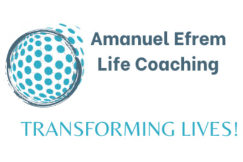
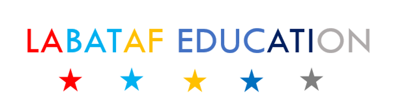

About Me
Tech Enthusiast dreaming to impact personal development and education sector in East Africa by utilizing digital platforms. Aspiring coach working toward the International Coaching Federation credentials. Senior Technical Assistant in Geology department of Wallaga University. I am currently pursuing Masters degree in Remote Sensing and Geo-informatics from Addis Ababa University. Recipient of Power Learn Project Africa Scholarship
Interests
Teaching and empowering generation through different trainings is my passion as I love to share and teaching. Giving coaching services to younger generation after conducting leadership development program
Education is key weapon to equip generations. Growing up in teachers family, I have calling of teaching others. Labataf Education envisioned to transform education from KG-Grade 12
Skills
- HTML & CSS
- JavaScript
- R for scientific computing
- LaTex
- QGIS
- Python
- Git & GitHub